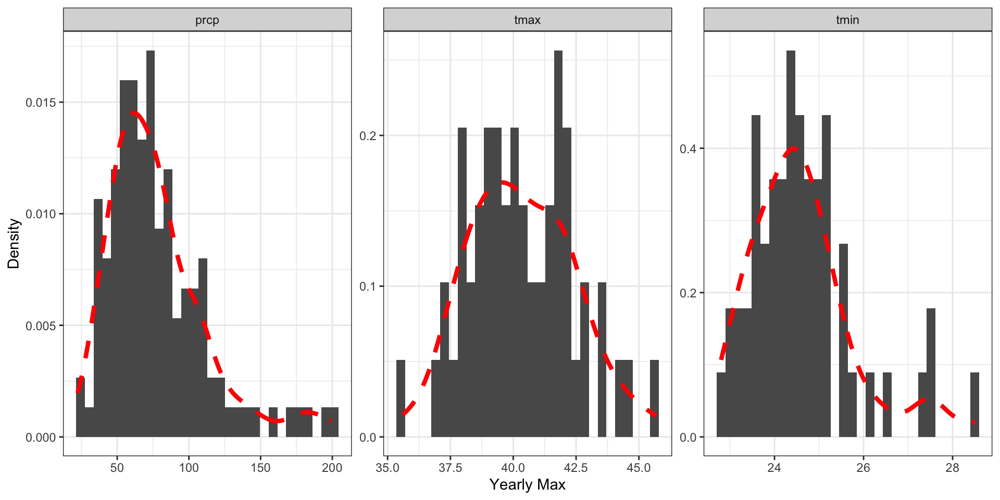
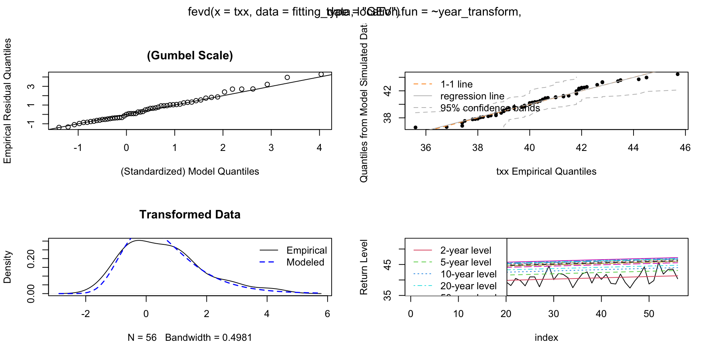

Estimating the probability of extreme events is useful for:
Knowing how high to build a dam to reduce flood risk
Appropriately pricing insurance at given a location
Advising government about the risks from climate extremes
Observations are things we’ve seen.
Random variables are things we’ve yet to see
Let \(X\) be the random variable for a six sided dice roll then:
Probability my next roll is a 4 is \(\mathbb{P}(X = 4) = 1/6\)
Probability my next roll is less than a 4 is \(\mathbb{P}(X < 4) = 3/6\)
The probability mass function for discrete random variables is \(\mathbb{P}(X = x)\).
The cumulative distribution function for discrete random variables \(\mathbb{P}(X \leq x)\)
What is it?For large enough sample, the distribution of the sample mean will be approximately normal.
What do we need for this to be true: Continuous random variable with a finite mean and finite variance.
Why is that cool? No matter what the original data looks like, if you take the average of enough samples, the distribution of those averages will look like a normal distribution.
Why is that useful? Good for statistical inference, e.g. hypothesis testing, and estimating confidence intervals.
Consider a continuous random variable \(X\)
with distribution function \(F(x) = \mathbb{P}(X < x)\).
For a sequence of independent and identically distributed random variables, \(X_1\), \(X_2\), \(\dots\), \(X_n\) the maximum is
\[ M_{n} = \max \lbrace X_1, X_2, \dots X_{n} \rbrace. \]
The probability \(M_n\) is less than some high quantile \(z\) is
\[ \mathbb{P}(M_{n} < z) = \mathbb{P}(X_1 < z, X_2 < z, \dots , X_{n} < z)\]
Using that the random variables are independent
\[ \mathbb{P}(M_{n} < z) = \mathbb{P}(X_1 < z) \times \mathbb{P}(X_2 < z), \times \dots \times \mathbb{P}(X_{n} < z)\]
Using that the random variables are identically distributed
\[ \mathbb{P}(M_{n} < z) = \mathbb{P}(X < z)^n = \left[ F(z) \right]^n \]
But we don’t know \(F(z)\)
We can try to estimate \(F(z)\) from the data.
e.g For \(m\) observations:
\[ F(z) = \mathbb{P}(X < z) = \dfrac{1}{m}\sum_{i = 1}^m \left( x_i < z \right). \]
That won’t work well for extreme values of \(z\).
Other problem for large \(n\) values, small errors in the estimation of \(F(z)\) become big errors when we estimate \(\left[F(z)\right]^n\).
So how else can we estimate \(\mathbb{P}(M_n < z)\)?
While we don’t know \(\left[F(z)\right]^n\)
We do know what the limiting distribution is - call that \(G(z)\)!
We can estimate \(G(z)\) using extreme value theory .
So for large enough \(n\) provided the limit exists and is non-dengerate:
\[ \mathbb{P}(M_n < z) = \left[F(z)\right]^n \approx \lim_{n \rightarrow \infty} \left[F(z)\right]^n \rightarrow G(z; \mu, \sigma, \xi)\]
Depending on the data you start with you can end up with one of three non-degenerate limiting distributions:
I: Weibull (Bounded extremes)
e.g. Temperature
II: Gumbel (Thin-tailed extremes)
e.g.Storm Surge
III: Fréchet (Heavy-tailed extremes)
e.g Rainfall
Don’t need to know which limiting regime before you start!
Generalised Extreme Value (GEV) Distribution (Coles 2001):
\[ G(z; \mu, \sigma, \xi) = \exp \Bigg\lbrace{ -\left[1 + \xi \left( \dfrac{z - \mu}{\sigma}\right) \right]^{-1 / \xi}\Bigg\rbrace} \]
Where:
Shiny app time
Problem:
Climate variables like rainfall and temperature are not identically distributed.
That’s okay. We have options.
Stratify your data
e.g. fit to a stationary period, fit to Summer.
Alternatively you can allow your GEV parameters to vary smoothly as a function of covariates.
e.g. let \(\mu\) vary with the year, vary with climate change
Problem:
Climate variables like rainfall and temperature are not independent. The weather today, has an influence on the weather tomorrow.
That’s okay.
We only worry if there is long-memory in the process.
The temperature today is independent of the temperature this time next year
Let’s install the packages we need for today:
Let’s load those packages into our library:
Using the rnoaa R package (Chamberlain 2021), we can:
Access the daily observations in the Global Historical Climate Network (GHCN)
For Australia, these stations are the same as those monitored by the Bureau of Meteorology
Australian stations have IDs starting with “ASN”
You are welcome to pick a station close to your home or your heart.
Conditions: Pick something with a long record (>50 years) that has elements of both “TMAX” and “PRCP”.
May also like to look for a station by name
# A tibble: 20 × 12
id latitude longitude elevation state name gsn_flag wmo_id element
<chr> <dbl> <dbl> <dbl> <chr> <chr> <chr> <chr> <chr>
1 ASN00040082 -27.5 152. 97 "" UNIVE… "" "9456… TMAX
2 ASN00040082 -27.5 152. 97 "" UNIVE… "" "9456… TMIN
3 ASN00040082 -27.5 152. 97 "" UNIVE… "" "9456… PRCP
4 ASN00040082 -27.5 152. 97 "" UNIVE… "" "9456… DAPR
5 ASN00040082 -27.5 152. 97 "" UNIVE… "" "9456… DATN
6 ASN00040082 -27.5 152. 97 "" UNIVE… "" "9456… DATX
7 ASN00040082 -27.5 152. 97 "" UNIVE… "" "9456… DWPR
8 ASN00040082 -27.5 152. 97 "" UNIVE… "" "9456… MDPR
9 ASN00040082 -27.5 152. 97 "" UNIVE… "" "9456… MDTN
10 ASN00040082 -27.5 152. 97 "" UNIVE… "" "9456… MDTX
11 ASN00040436 -27.5 152. 98 "" GATTO… "" "" TMAX
12 ASN00040436 -27.5 152. 98 "" GATTO… "" "" TMIN
13 ASN00040436 -27.5 152. 98 "" GATTO… "" "" PRCP
14 ASN00040436 -27.5 152. 98 "" GATTO… "" "" DAPR
15 ASN00040436 -27.5 152. 98 "" GATTO… "" "" DATN
16 ASN00040436 -27.5 152. 98 "" GATTO… "" "" DATX
17 ASN00040436 -27.5 152. 98 "" GATTO… "" "" DWPR
18 ASN00040436 -27.5 152. 98 "" GATTO… "" "" MDPR
19 ASN00040436 -27.5 152. 98 "" GATTO… "" "" MDTN
20 ASN00040436 -27.5 152. 98 "" GATTO… "" "" MDTX
# ℹ 3 more variables: first_year <int>, last_year <int>, distance <dbl>Download the data using meteo_pull_monitors
Example using the station ID
or using the station name
Light touch: Just doing the basics to tidy and format the data.
stn_data_preprocessed <- stn_data |>
# Ensure Year format is a date
dplyr::mutate(year = lubridate::year(date)) |>
# Select the relevant columns
dplyr::select(tmax, tmin, prcp, date, year) |>
# Pivot to a tidy long format
tidyr::pivot_longer(cols = c(tmax, tmin, prcp), names_to = "element", values_to = "observation") |>
# Change the unit of measurement
dplyr::mutate(observation = as.numeric(observation)/10) |>
# Filter out NA values (temperature)
dplyr::mutate(observation = if_else(
observation == 99 & element %in% c('tmax','tmin'),
NA, observation))We want to get the highest observation each year.
Light touch: Restrict to years with more than 90% of the observations each year.
# A tibble: 236 × 3
year element max
<dbl> <chr> <dbl>
1 1899 prcp 38.1
2 1900 prcp 84.8
3 1901 prcp 156.
4 1902 prcp 56.4
5 1903 prcp 82.6
6 1904 prcp 37.6
7 1905 prcp 51.1
8 1906 prcp 80.3
9 1907 prcp 42.7
10 1908 prcp 118.
# ℹ 226 more rowsCode for producing the plot:
Transform the data to a wide format the data for fitting
Update to use the correct labels
# Extract the block maxima
max_df = stn_max |>
tidyr::pivot_wider(names_from = element, values_from = max) |>
as.data.frame() |>
rename(rx1d = prcp, txx = tmax, tnx = tmin)
max_df year rx1d txx tnx
1 1899 38.1 NA NA
2 1900 84.8 NA NA
3 1901 156.2 NA NA
4 1902 56.4 NA NA
5 1903 82.6 NA NA
6 1904 37.6 NA NA
7 1905 51.1 NA NA
8 1906 80.3 NA NA
9 1907 42.7 NA NA
10 1908 117.9 NA NA
11 1909 58.7 NA NA
12 1910 122.9 NA NA
13 1911 134.6 NA NA
14 1912 75.4 NA NA
15 1913 85.1 NA NA
16 1914 59.2 NA NA
17 1915 55.1 NA NA
18 1916 43.7 NA NA
19 1917 59.4 NA NA
20 1918 58.4 NA NA
21 1919 38.6 NA NA
22 1920 66.5 NA NA
23 1921 71.1 NA NA
24 1922 33.0 NA NA
25 1923 43.4 NA NA
26 1924 61.7 NA NA
27 1925 77.0 NA NA
28 1926 53.1 NA NA
29 1927 64.8 NA NA
30 1928 69.9 NA NA
31 1929 67.6 NA NA
32 1930 85.3 NA NA
33 1931 89.9 NA NA
34 1932 63.0 NA NA
35 1933 130.8 NA NA
36 1934 58.2 NA NA
37 1935 57.2 NA NA
38 1936 51.6 NA NA
39 1937 69.1 NA NA
40 1938 73.4 NA NA
41 1939 109.2 NA NA
42 1940 55.4 NA NA
43 1941 73.9 NA NA
44 1942 105.4 NA NA
45 1943 97.0 NA NA
46 1944 74.7 NA NA
47 1945 57.2 NA NA
48 1946 144.8 NA NA
49 1947 92.5 NA NA
50 1948 111.5 NA NA
51 1949 107.2 NA NA
52 1950 88.9 NA NA
53 1951 103.9 NA NA
54 1952 83.6 NA NA
55 1953 64.0 NA NA
56 1954 70.4 NA NA
57 1955 141.5 NA NA
58 1956 99.6 NA NA
59 1957 39.1 NA NA
60 1958 95.0 NA NA
61 1959 124.7 NA NA
62 1960 47.8 NA NA
63 1961 49.5 NA NA
64 1962 53.3 NA NA
65 1963 62.2 NA NA
66 1964 108.2 NA NA
67 1965 192.3 42.2 23.9
68 1966 55.9 41.9 25.6
69 1967 76.2 40.3 24.4
70 1968 75.7 42.8 25.6
71 1969 100.6 39.4 24.4
72 1970 79.8 35.6 22.8
73 1971 75.2 39.2 23.3
74 1972 55.1 NA 24.5
75 1973 179.3 38.0 24.5
76 1974 199.4 37.9 23.5
77 1975 49.2 36.8 24.4
78 1976 85.0 39.0 23.5
79 1977 53.0 40.0 23.8
80 1978 80.8 37.4 23.0
81 1979 76.0 41.3 28.5
82 1980 49.0 42.8 24.9
83 1981 73.2 40.6 25.2
84 1982 81.0 39.1 23.6
85 1983 65.6 38.5 24.2
86 1984 53.0 38.4 23.1
87 1985 63.8 39.4 24.7
88 1986 44.3 38.2 25.1
89 1987 86.2 40.5 25.5
90 1988 103.0 39.8 23.2
91 1989 66.4 38.1 26.2
92 1990 76.4 41.0 27.5
93 1991 108.8 41.0 25.0
94 1992 182.0 37.8 25.2
95 1993 35.2 41.3 26.5
96 1994 65.8 44.5 27.6
97 1995 85.4 40.1 24.8
98 1996 118.9 42.1 24.5
99 1997 45.0 41.8 24.2
100 1998 50.2 40.7 25.8
101 1999 106.8 37.5 24.4
102 2000 25.6 40.0 23.5
103 2001 73.6 42.0 24.5
104 2002 34.3 42.6 25.1
105 2003 47.6 39.0 24.0
106 2004 66.4 42.0 25.0
107 2005 56.2 40.2 25.2
108 2006 41.8 41.8 24.6
109 2007 58.8 38.9 23.9
110 2008 170.6 38.7 23.0
111 2009 47.4 41.9 23.5
112 2010 64.2 39.2 23.8
113 2011 87.2 37.4 24.2
114 2012 95.8 39.7 23.4
115 2013 110.0 41.5 23.9
116 2014 101.0 44.2 24.8
117 2015 72.2 38.7 24.1
118 2016 36.8 39.8 24.4
119 2017 62.0 45.7 27.3
120 2018 80.0 41.9 23.8
121 2019 22.4 43.4 25.0
122 2020 33.6 43.5 24.7
123 2021 89.4 40.4 24.3Practice Time
Take some time now to explore the basic functions in rnoaa
Either use my code to download some station data
Or search for a station of interest to you and download that data
Once you have your data, create a plot to check your maxima
Also format your data to be ready for model fitting
If its helpful you can also directly read in the files I’ve just used
Covering the basics
Practice using the precipitation maxima
Fit a stationary GEV, so constant parameters
\(\mu = \mu_0\), \(\sigma = \sigma_0\) and \(\xi = \xi_0\).
Using the R package extRemes (Gilleland and Katz 2016)
Option 1: Pass our data in as a vector
# Extract the block maxima
rx1d = max_df$rx1d
# Fit the model
rx1d_gev_fit_vec = extRemes::fevd(x = rx1d, type = "GEV")
# Look at the parameters
rx1d_gev_fit_vec$results$par |> round(2)location scale shape
61.65 24.07 0.08
Sanity check: Do the parameters look reasonable?
Option 2: Pass our data in as a data frame
fitting_data = max_df |> dplyr::select(year, rx1d)
# Fit the model
rx1d_gev_fit = fevd(x = rx1d, data = fitting_data, type = "GEV")
# Look at the parameters
rx1d_gev_fit$results$par |> round(2)location scale shape
61.65 24.07 0.08
Sanity check: Do the parameters look reasonable?
Note you don’t need to preselect your columns, I chose to to this to avoid dealing with NAs more directly.
fevd(x = rx1d, data = fitting_data, type = "GEV")
[1] "Estimation Method used: MLE"
Negative Log-Likelihood Value: 591.3038
Estimated parameters:
location scale shape
61.65492561 24.07477131 0.08270394
Standard Error Estimates:
location scale shape
2.44512881 1.82634935 0.06807762
Estimated parameter covariance matrix.
location scale shape
location 5.97865488 2.06057137 -0.054847717
scale 2.06057137 3.33555196 -0.022519479
shape -0.05484772 -0.02251948 0.004634563
AIC = 1188.608
BIC = 1197.044 We want to know the level that is exceeded on average 1 in every \(100\) years:
\[\mathbb{P}(M_n < z_{100}) \approx G(z_{100}) = \dfrac{1}{100}. \]
Here we need to solve for \(z_{100}\). This is what is known as the 1 in \(100\) year return level.
In generality: The return level \(z_{p}\) associated with a return period \(p\) is: \[\mathbb{P}(M_n < z_{p}) \approx G(z_{p}) = \dfrac{1}{p}. \]
Approach 1: Can use the quantile function
A 1 in \(100\) year event at this station is 196 mm.
But …
That doesn’t give CIs.
Approach 2: There is an inbuilt to estimate return levels from your fitted model with CIs
“1 in 100s” can be confusing.
It isn’t an event that happens exactly once ever 100 years.
It doesn’t mean we can’t have two 1 in 100 year events in a row.
It makes no sense in a non-stationary climate
Now say the event with an Annual Exceedance Probability (AEP) of 0.01 instead
Estimating a multiple return levels using your model:
# Get the 1 in 100 year return level
rl100 = return_levels |>
dplyr::filter(return_periods == 100) |>
dplyr::pull(estimate)
# Plot the return periods
return_period_plot <- ggplot() +
geom_ribbon(data = return_levels, aes(x = return_periods, ymin = lower, ymax = upper), alpha = 0.5, fill = "blue") +
geom_line(data = return_levels, aes(x = return_periods, y = estimate)) +
geom_line(data = NULL, aes(x = c(2, 100, 100), y = c(rl100, rl100,0)), linetype = "dashed") +
scale_x_log10(breaks = c(2,5,10,20,50,100,250,500)) +
theme_bw() +
xlab('Return Period') +
ylab('Return Level (mm)') +
ggtitle(paste("Extreme Rainfall at", stn_id))Practice Time
Fit a stationary GEV to your data
Start with Rx1d (Rainfall)
Look at your parameters and diagnostic plots
Produce a plot of the return level
Extra: Add your data points to the plot (use empirical quantiles).
Skip ahead: Try fitting other variables
Extension: Recreate some of the other diagnostic plots
Non-stationarity and Model Selection
Prepare our data:
fitting_data = max_df |>
dplyr::select(year, txx) |>
dplyr::filter(!is.na(txx)) |>
dplyr::mutate(year_transform = year - 2024)
fitting_data year txx year_transform
1 1965 42.2 -59
2 1966 41.9 -58
3 1967 40.3 -57
4 1968 42.8 -56
5 1969 39.4 -55
6 1970 35.6 -54
7 1971 39.2 -53
8 1973 38.0 -51
9 1974 37.9 -50
10 1975 36.8 -49
11 1976 39.0 -48
12 1977 40.0 -47
13 1978 37.4 -46
14 1979 41.3 -45
15 1980 42.8 -44
16 1981 40.6 -43
17 1982 39.1 -42
18 1983 38.5 -41
19 1984 38.4 -40
20 1985 39.4 -39
21 1986 38.2 -38
22 1987 40.5 -37
23 1988 39.8 -36
24 1989 38.1 -35
25 1990 41.0 -34
26 1991 41.0 -33
27 1992 37.8 -32
28 1993 41.3 -31
29 1994 44.5 -30
30 1995 40.1 -29
31 1996 42.1 -28
32 1997 41.8 -27
33 1998 40.7 -26
34 1999 37.5 -25
35 2000 40.0 -24
36 2001 42.0 -23
37 2002 42.6 -22
38 2003 39.0 -21
39 2004 42.0 -20
40 2005 40.2 -19
41 2006 41.8 -18
42 2007 38.9 -17
43 2008 38.7 -16
44 2009 41.9 -15
45 2010 39.2 -14
46 2011 37.4 -13
47 2012 39.7 -12
48 2013 41.5 -11
49 2014 44.2 -10
50 2015 38.7 -9
51 2016 39.8 -8
52 2017 45.7 -7
53 2018 41.9 -6
54 2019 43.4 -5
55 2020 43.5 -4
56 2021 40.4 -3Stationary Model:
\(\mu = \mu_0\), \(\sigma = \sigma_0\) and \(\xi = \xi_0\).
Non-stationary model: Linear shift in \(\mu\).
\(\mu = \mu_0 + \mu_1 (\text{year} - 2024)\)
\(\sigma = \sigma_0\)
\(xi = \xi_0\)
Code: location = ~year_transform
Non-stationary model: Linear shift in location and scale:
\(\mu = \mu_0 + \mu_1(\text{year} - 2024)\)
\(\sigma = \sigma_0 + \sigma_1(\text{year} - \text{start year})\)
\(\xi = \xi_0\)
Code:
location = ~year_transform
scale = ~year_transform
Which model is better?
For nested models best to use the log-likelihood ratio test.
Nested means the parameter function for the larger model can be written as subset of the smaller model.
For non-nested models use an Information Criteria AIC/BIC - smaller is better.
Model with a linear shift is best
$p.value
Likelihood-ratio
0.0107668 $p.value
Likelihood-ratio
0.03870819 $p.value
Likelihood-ratio
0.9990509 Remember to look at the model you pick!
Practice Time
Fit a non-stationary GEV to your data
Start with txx (Maximum Temp)
Look at your parameters and diagnostic plots
Determine if climate change has a significant linear influence on extremes
You may also like to fit a GEV to tnx or rx1d
Extension: Try other functional forms to smoothly vary your covariates, suggestions include an indicator function or ENSO covariate.
Can estimate the return level conditional on a given year.
return_periods = c(2:1000)
pars = txx_gev_fit1$results$par
mu0 = pars[1]
mu1 = pars[2]
scale = pars[3]
shape = pars[4]
get_cond_mu <- function(conditional_year, mu0, mu1){
mu = mu0 + mu1*(conditional_year - 2024)
return(mu)
}
rls_cond2024 = qevd(1/return_periods, loc = get_cond_mu(2024, mu0, mu1), scale = scale, shape = shape, lower.tail = FALSE)
rls_cond1924 = qevd(1/return_periods, loc = get_cond_mu(1924, mu0, mu1), scale = scale, shape = shape, lower.tail = FALSE)
cond_rp = data.frame(return_periods, rls_cond2024, rls_cond1924) |>
tidyr::pivot_longer(cols = 2:3, names_to = "cond", values_to = "rl")cond_plot <- ggplot(cond_rp) +
geom_line(aes(x = return_periods, y = rl, group = cond, col = cond)) +
scale_x_log10(breaks = c(2,5,10,20,50,100,250,500)) +
theme_bw() +
ylab("Return Level") +
xlab("Return Period") +
scale_color_manual(labels = c("1924", "2024"), values = c("rls_cond2024" = "red", "rls_cond1924" = "blue")) + xlim(c(0,150))
cond_plotPractice Time
Produce a plot of the conditional return levels
Extension: Use bootstrapping to simulate data and estimate CIs for your conditional return levels
Default optimiser: Maximum Likelihood
If you are fitting a lot of stationary GEVs you might like LMoments.
This is because LMoments is a non-parametric estimator.
set.seed(1)
timeC = Sys.time()
example_gev_fit_lmoments = fevd(x = revd(100), type = "GEV", method = "Lmoments")
timeD= Sys.time()
timeD - timeCTime difference of 0.001476049 secslocation scale shape
-0.05 0.87 -0.08 That’s 5.12 times as fast.
If your model fails to fit one of the common reasons is that the scale parameter is negative.
You can force the optimiser to fit the log of the scale parameter instead to avoid this - set use.phi = TRUE
Still having problems with your model fit, try initialising your parameter estimates using initial
Lmoments is useful for automatically setting a starting point
init_par = list("location" = -0.02, "scale" = 0.94, "shape" = 0.08)
example_gev_fit_init = fevd(x = revd(100), type = "GEV", initial = init_par)
example_gev_fit_init$results$par |> round(2)location scale shape
-0.07 0.80 0.08 Still not working, try a different starting point
You should also check your data here for any problem observations
Fit enough of these distributions you will come into troubles with the optimiser.
Example function replicating a failed fit:
When running a script or fitting multiple distributions to avoid optimiser errors use tryCatch().
try_fit <- function(vec){
tryCatch(
{
pars <- get_pars_from_model(vec)
return(c(pars, "good"))
},
warning = function(w){
message(w)
return(c(NA, NA, NA, "warning"))
},
error = function(e){
message(e)
return(c(NA, NA, NA, "error"))
}
)
}
try_fit(revd(100))location scale shape
"0.081" "0.97" "0.069" "good" Here is an example:
set.seed(1)
results = data.frame(matrix(NA, 10,4))
for(i in 1:10){
results[i, ] = try_fit(revd(100))
}
results X1 X2 X3 X4
1 -0.051 0.877 -0.1 good
2 -0.048 0.815 0.084 good
3 -0.044 0.997 0.027 good
4 <NA> <NA> <NA> error
5 <NA> <NA> <NA> error
6 0.126 0.999 0.095 good
7 0.087 0.97 -0.026 good
8 -0.119 1.087 0.001 good
9 -0.067 0.997 0.013 good
10 <NA> <NA> <NA> errorCovering the basics
GEVs
GEV distributions are fit to data that is the largest observation in a block
eg. Wettest day of the year
In a given year, there may be more than one extreme observation
In some years, maybe no observations are extreme
But what if you want to use all the extreme observations to fit a distribution
ie. \(\mathbb{P}(X > y + u | X > u)\)
Can fit a Generalised Pareto Distribution (GP, PoT)
Closely related to the GEV
Model is fit to all observations exceeding a high threshold, \(u\).
The threshold, \(u\), needs to be extreme, so that the approximation to limiting distribution is reasonable. e.g \(q_u >= 0.95\)
Picking the threshold is a classic bias-variance trade-off.
Note the GP distribution has two parameters not three, \(\tilde{\sigma}\) and \(\xi\).
\(\tilde{\sigma}\) is sort of like the scale parameter. \(\tilde{\sigma} = \sigma + \xi(u - \mu)\)
Note that \(\tilde{\sigma}\) is a linear function of \(u\) (can use this to set the threshold).
\(\xi\) is the same as in the GEV.
# Get our precipitation observations
prcp_obs = stn_data_preprocessed |>
dplyr::filter(element == "prcp") |>
dplyr::pull(observation)
# Estimate a high threshold
prcp_threshold = quantile(prcp_obs, 0.975, na.rm = TRUE)
# Filter your data to the exceedances
prcp_exceedances = stn_data_preprocessed |>
dplyr::filter(element == "prcp" &
observation > prcp_threshold) |>
dplyr::pull(observation)
# Fit a GP
prcp_gp_fit = fevd(prcp_exceedances, threshold = prcp_threshold, type = "GP")
# Parameters
prcp_gp_fit$results$par scale shape
14.1656880 0.1892685 Return Periods
For GEVs, the return periods were the number of years on average you expect to wait to see an event of a given return level
But for GEVs, each observation represented a year
For GPs, the return period is the the number of observations on average you expect before you see an event of a given level.
As for GPs, you can have more than one observation per year
In a stationary context, still quite interprettable, in a non-stationary context it gets a bit trickier.
For these reasons, many people prefer a GEV.
See Chapter 4 and 5 of (Coles 2001).
Practice Time
Take some time now to fit a Generalised Pareto
Extra: Look at how many extremes you have per year. (Can use the count code from earlier when we looked at how many observations per year.)
We will also be wrapping up today’s tutorial shortly, so get to some help to wrap up your code projects.
Today:
Learnt about the basics of extreme value distributions
Covered how to fit these distributions in R
Looked at return periods and the nuance of fitting these
Covered some tips and tricks for fitting these distributions
And I hope we’ve had fun!